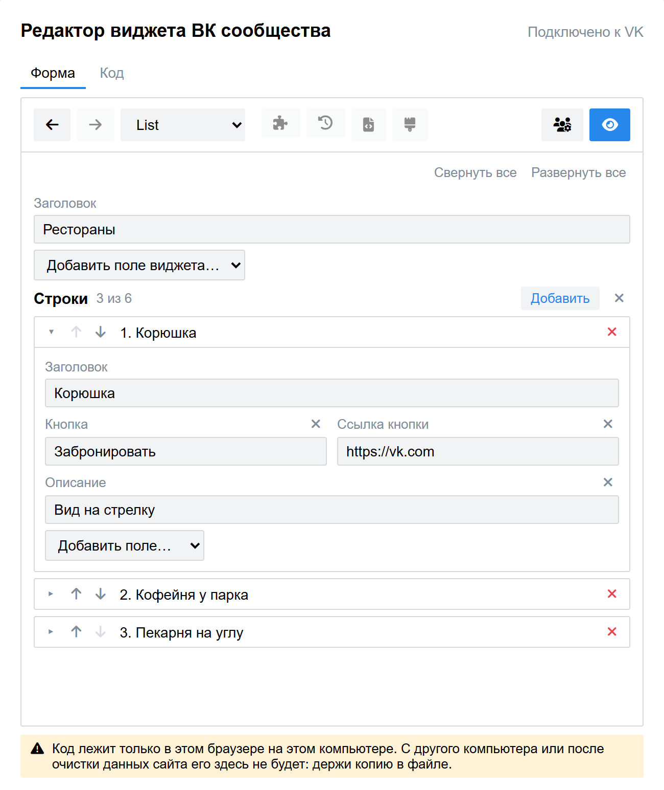
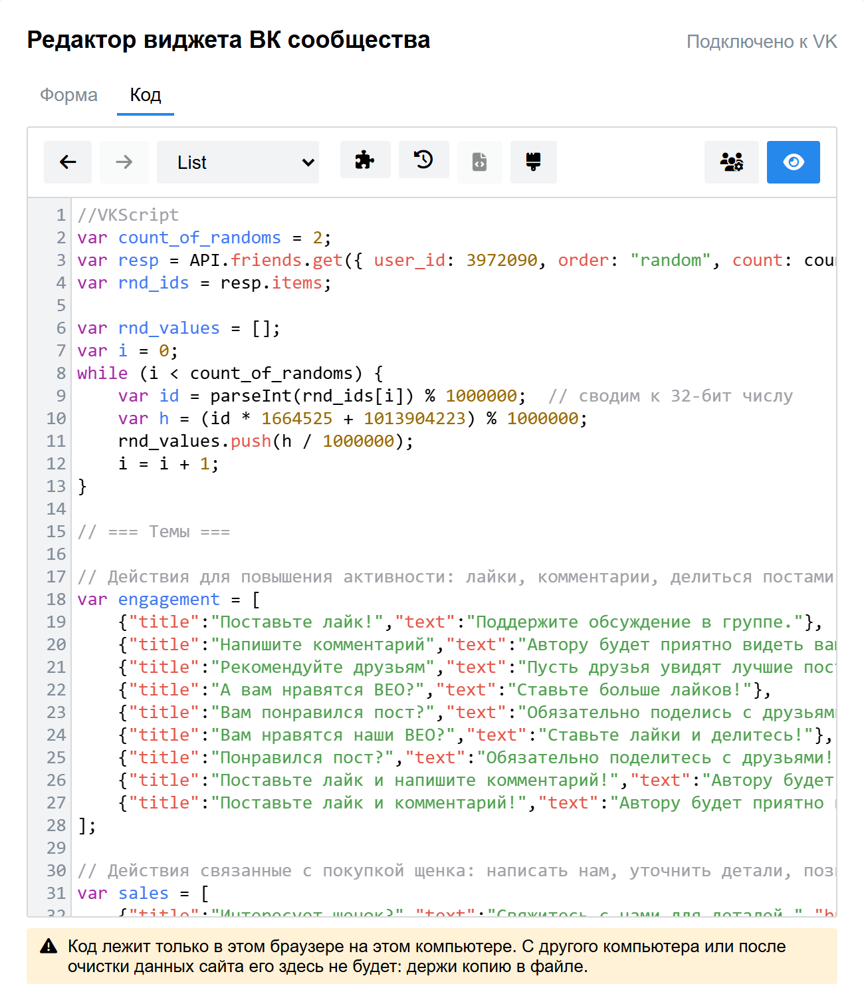

Редактор виджета ВК сообщества
Подключаюсь к VK…
Редактор работает внутри сообщества
Виджет ставится в сообщество, и код хранится для каждого сообщества отдельно. Добавьте приложение в своё сообщество и откройте его оттуда.


Тестовый режим: здесь можно посмотреть и попробовать редактор, но поставить виджет можно только из сообщества. Добавить в сообщество
Код лежит только в этом браузере на этом компьютере. С другого компьютера или после очистки данных сайта его здесь не будет: держи копию в файле.